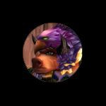

Guildes
Soeurs de la Plaine
Runga
Age : 110Sexe : Femme
Race : Tauren
Faction : Horde
Formation : Druide
Description : Petite-Fille d'une des dernières représentantes de la tribu Mojache vivant actuellement dans les Tarides, gardienne des traditions des Filles de la Pluie, un des anciens cercles druidiques tauren nés dans Feralas, fille d'une famille de chasseurs du Camp Taurajo.
Je m'efforce de suivre la voie du druidisme moderne, mais cherche à retrouver les arcanes du druidisme tauren originel, disparu depuis vingt générations.
Ma quête des traditions oubliées de mon peuple m'a très logiquement guidée vers l'Esprit du Troupeau, et j'ai donc rejoins les Soeurs de la Plaine.
Plus d'infos sur Runga >>>
Lire le récit de Runga >>>
Shyra
Age : 28Sexe : Femme
Race : Tauren
Faction : Horde
Formation : Chasseur
Description : Mon nom est Shyra, du clan Burninghoof.
Ma vie n'a rien de bien passionnant, je suis une Tauren comme toutes les autres. Ma famille est une famille de chasseurs depuis des années, exception faite de mon frère Alphe, qui a choisi la voie des guerriers.
Mes parents sont morts dans une embuscade à Bael Dun, tombés sous les coups des nains, et je voue depuis lors à ces derniers une rancune farouche.
Mon père m'a appris que la vengeance n'amenait jamais rien de bon. Ainsi, je me perfectionne dans la voie du chasseur au nom de mes parents et de mon clan.
Plus d'infos sur Shyra >>>
x
 Sexe : Homme
Sexe : Homme
Race : Humain
Faction : Alliance
Formation : Démoniste
Plus d'infos sur x >>>
Lire les 5 récits de x >>>